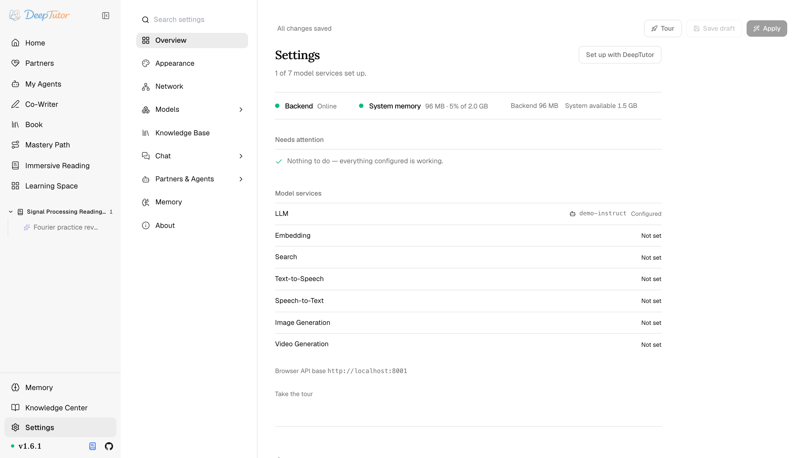
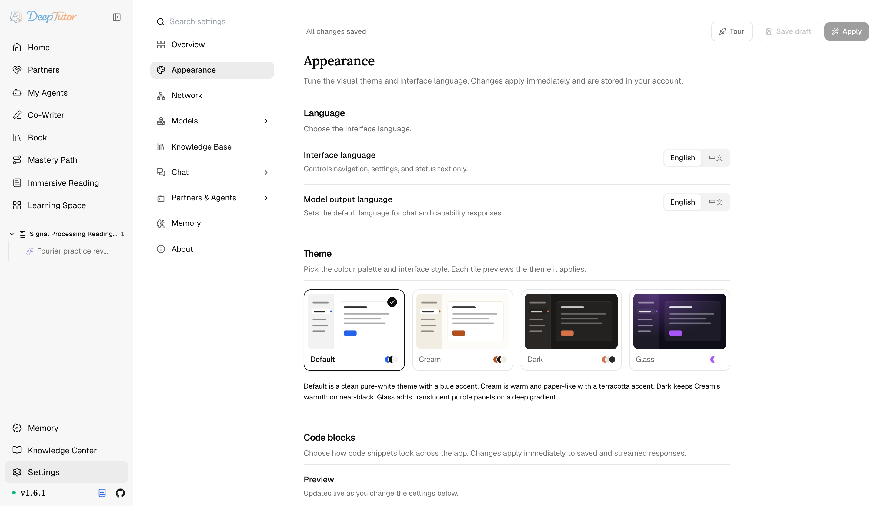
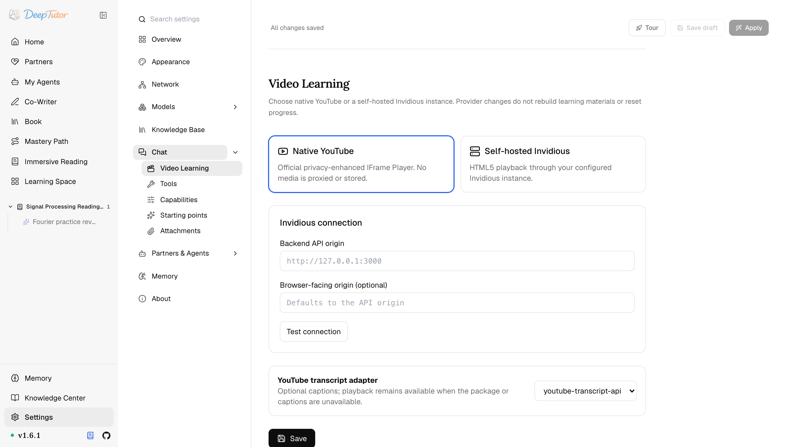
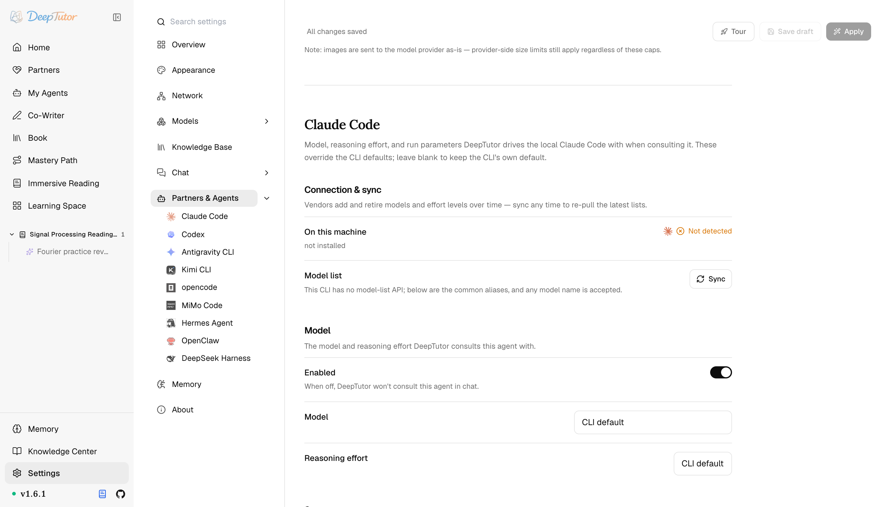
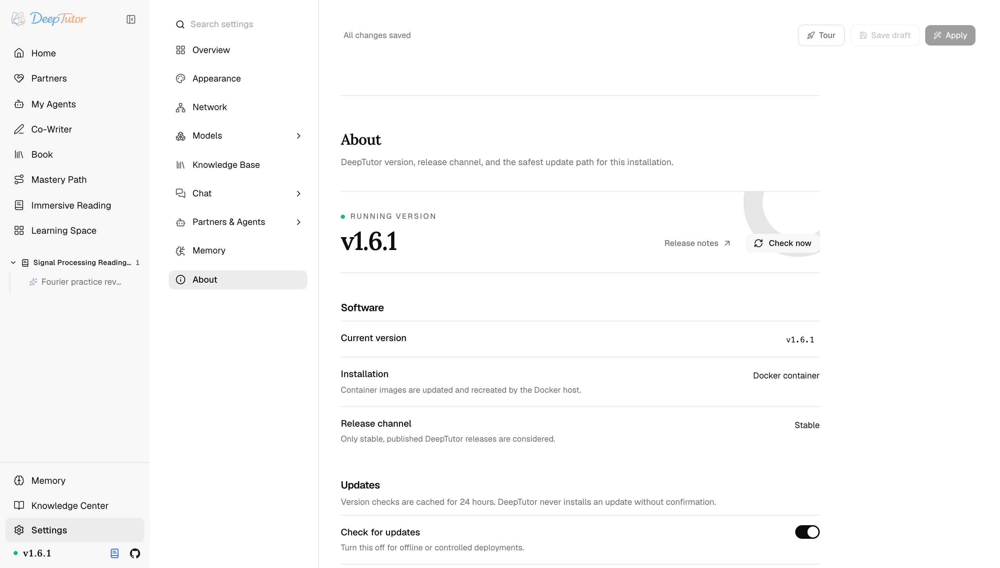

探索 DeepTutor設定
最全 DeepTutor 設定指南！8 大版塊+4 款主題+9 種智慧代理執行框架，每一項都教你怎麼配！
DeepTutor 的控制面板——外觀、網路、模型、解析、影片學習、智慧代理、記憶與更新。
原文連結：https://docs.deeptutor.info/zh-cn/explore/settings/
一個設定頁能塞下多少東西？主題、網路、模型、解析引擎、影片學習、智慧代理、記憶、更新，DeepTutor 的答案是：全都要。
最近我把 DeepTutor 的設定（Settings）頁面從上到下點了一遍，8 大版塊、4 款內建主題、9 種本機智慧代理執行框架（agent harness）全部過了一遍。
很多人看到這裡，基本就放棄了：密密麻麻的欄位，誰看得完？
其實大可不必。DeepTutor 有個很貼心的機制：大部分版塊都是先改草稿、測試、再應用，一次糟糕的改動不會搞垮正常的設定。下面我帶你逐個版塊走一遍，照著配就行。
設定頁是什麼
設定是 DeepTutor 的維運控制面板。
大多數版塊採用草稿—應用（draft-and-apply）模式：你先編輯草稿、測試，再 Apply（應用）。這樣一次糟糕的服務商（Provider）改動永遠不會搞垮一套正常的設定。
設定值持久化到你帳戶下的 data/user/settings/*.json（以及少數幾個 YAML 檔案）。
在哪裡開啟
點選左側欄底部的 Settings（設定）。
側邊常駐一個可搜尋的導航器列出每個頁面，任意兩項設定之間只隔一次點選。
落地頁不再重複目錄，而是回答「我現在處於什麼狀態」：頂部一條即時狀態條（後端健康狀況，以及整個執行行程樹的常駐記憶體佔用），其下是哪些服務已配好、哪些上次測試失敗、是否還有草稿待應用。
設定項較多的類別（模型、聊天、夥伴與智慧代理）現在整頁捲動展開。
側欄功能入口與聊天記錄的順序則是另一項單機偏好：拖曳即可排序，也可把功能入口收進 More。

8 大版塊各管什麼，一張表說清：
| 版塊 | 控制什麼 |
|---|---|
| Appearance （外觀） | 主題、介面語言與模型輸出語言、程式碼塊外觀。 |
| Network （網路） | 瀏覽器使用者端使用的 API base、連接埠與 CORS。 |
| Models （模型） | Connections（連線）、LLM、任務模型、Embedding、Search、文字轉語音、語音轉文字、圖像生成、影片生成。 |
| Knowledge Base （知識庫） | 文件解析引擎。 |
| Chat （聊天） | 影片學習、工具、各能力參數、起始建議與附件上限。 |
| Partners & Agents （夥伴與智慧代理） | 可從聊天呼叫的九種本機智慧代理執行框架。 |
| Memory （記憶） | 整理器的分塊、預算、去重與引用策略。 |
| About （關於） | 當前版本、安裝型別、發布通道、更新檢查與安全更新路徑。 |
外觀：主題控狂喜
主題與兩個獨立的語言開關：介面語言只覆蓋導航、設定與狀態文案，模型輸出語言決定聊天與能力回覆的語言。
內建四款主題：Default（純白乾淨、藍色點綴）、Cream（暖調、紙感、赤陶點綴）、Dark（在近黑底上保留 Cream 的暖意）、Glass（深色漸變上的半透明紫色面板）。
每個磁貼都會預覽它所應用的主題。另有 Code blocks 面板設定語法主題、行號與換行。

模型：一處管完所有服務商
這裡集中管理所有模型與服務：語言模型、用於後台呼叫的 task model、向量化模型（Embedding）、網路搜尋、語音（語音合成 TTS/語音識別 STT）以及圖像/影片生成。
每項服務由 profile 與模型目錄組成；大語言模型（LLM）和 Task profile 可選擇 API format，每個模型既可沿用 DeepTutor 的自動能力判斷，也可覆蓋工具呼叫、圖像輸入、JSON 輸出與推理支援。
一個 connection 儲存同一廠商的一份憑據，並把它連線到該廠商提供的所有服務，金鑰只需輸入一次。
語音模型驅動朗讀與輸入框麥克風，圖像/影片模型會成為聊天工具。
請在 Apply 前先 Test；測試透過只證明 profile 能完成最小呼叫，並不保證該模型適合所有 capability。
在上下文中檢視 Models 頁面見聊天工作台 → 設定聊天能用到的東西，設定範例見模型與搜尋提供商。
知識庫：解析引擎選哪個
把上傳內容轉成文字（供知識庫與出題用）的文件解析引擎：Text-only、MinerU、Docling、Tika、markitdown、PyMuPDF4LLM 或 LiteParse。
本機模型下載預設關閉。詳見知識中心 → 文件解析。
聊天：五件事集中一處
Video Learning（影片學習）——選擇隱私增強的原生 YouTube，或自託管 Invidious 的瀏覽器/API origin，並提供連線測試與字幕 adapter。切換服務商不會重建材料或清空觀看進度。
Tools（工具）——聊天智慧代理可呼叫的內建工具。體驗增強類工具（brainstorm、web_search、paper_search、reason、geogebra_analysis，以及設定好相應模型後可用的 imagegen / videogen）由你開關；其餘的——包括 rag、兩條程式碼路徑和 cron——是鎖定的，在智慧代理需要時自動掛載。
Capabilities（能力）——為 Chat、Solve、Question、Research、Math animator 與 Co-writer 設定各能力的 LLM 參數與執行環境旋鈕，比如溫度、Token（模型計數的文字單位）預算、迴圈上限。
Starting points（起始建議）——多少條近期活動參與生成空輸入框下面那三行建議。
Attachments（附件）——聊天附件的大小上限與提取預算（管理員門控）。
MCP 服務不再在這裡：每個帳號都從學習空間的 MCP 服務商店自行安裝，或按 URL 新增遠端伺服器（/settings/mcp 會重新導向到那裡）。見 MCP 擴充。

更絕的：在聊天裡設定它
這一頁上的大部分東西，也可以直接開口。
「把介面切成中文，再換一個更好的 PDF 解析器」就是一句話，助手會檢查這套安裝、應用改動，並告訴你代價是什麼：立即生效、需要重新啟動，還是需要重建索引。
這只是一個多掛了四個工具的普通對話回合，所以在別的事情做到一半時問一句設定，不會把你的知識庫和搜尋工具一併丟掉。
它依據客觀訊號啟用：你選了這個能力、你的訊息把一個動作詞和一個設定物件湊在了一起，或者這是你在一套仍有明顯缺口的安裝上的第一次對話，而不是依據模型覺得設定這件事是否相關。
有三條規則讓它不至於莽撞：
新模型或新服務商在提交前先被探測。 探測跑在一份從未寫入磁碟的候選設定上。沒有這個順序，就會變成先寫後驗。而下一個回合，包括那個本該用來撤銷錯誤的回合，會跑在一個根本連不上的模型上。
API 金鑰（API key）永遠不進模型上下文。 需要憑據時，助手會在輸入框裡開啟對應的表單，由你的瀏覽器把 key 直接提交給伺服器端。可寫設定表裡的任何一項，甚至無法表示一個金鑰。
每個旋鈕都自帶作用域與影響。 個人設定存在你自己的檔案裡，部署級的僅限管理員。這是資料而非提示詞禮儀，所以「要不要重新啟動」這個回答是可靠的。
慢活它也能幹：安裝一個解析引擎、下載它的模型權重，並在同一次呼叫裡跟完安裝日誌，而不是把輪詢丟給你。只接受白名單裡的引擎 id，絕不接受任意包名或命令。
動動嘴就把設定改了，方便得有點離譜。
夥伴與智慧代理：9 種執行框架一次配好
設定你能在聊天裡呼叫的本機智慧代理執行框架——Claude Code、Codex、Antigravity CLI、Kimi CLI、opencode、MiMo Code、Hermes Agent、OpenClaw 與 DeepSeek Harness。
每塊會顯示本機是否找到命令，支援時可同步模型列表，並暴露各框架的無人值守執行參數。詳見我的智慧代理。

記憶：整理器的旋鈕
調校基於分塊的整理器：Update 與 Audit 各自針對每個 L2 介面與 L3 槽位的 LLM 輪數預算，以及 Dedup 迭代次數。詳見記憶 → 調校整理器。
關於與更新
側欄版本徽標會進入 About，並用狀態點提示更新情況。
About 會識別當前版本、安裝型別、穩定發布通道、最新正式版與發布說明。
檢查結果快取 24 小時，也可為離線或受控部署關閉；未經確認，DeepTutor 絕不會開始安裝。
自動 Update and restart 只在啟用虛擬環境裡的常規 PyPI（Python 官方包儲存庫）安裝、且 DeepTutor 管理 launcher 行程時提供。
進行中的對話必須先結束，更新器才能啟動；隨後它會交接給 worker，升級軟體套件，再用同一資料目錄重連。
原始碼工作區繼續走 Git（版本管理工具），Docker（容器部署工具）更新映像檔，未知或直接 artifact 安裝則只顯示手動路徑。

部署注意
- 專案根目錄的
.env被刻意忽略，不作為應用設定。 - 除非你設定了
DEEPTUTOR_HOME或用deeptutor start --home，執行環境設定都在data/user/settings/下。 - Docker 的瀏覽器使用者端必須能同時訪問前端與後端。在反向代理之後，請在 Network 裡設定外部 API base。
想繼續深挖
- 模型與搜尋提供商 ——模型與搜尋的設定範例
- DeepTutor 生態 ——在學習空間管理 Skill、MCP 服務與 CLI App
- Docker ——連接埠與反向代理說明
- 記憶 · 知識空間 · 我的智慧代理
配模型、調參數的過程中遇到問題，歡迎在留言區留言，把報錯資訊完整貼出來，我看到會回覆。